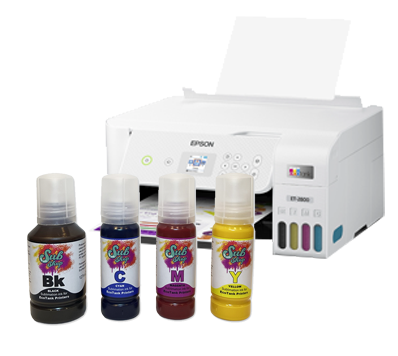

What supplies are necessary?
Sublimation Printer
This includes paper and ink that are made specifically for sublimation. Regular inkjet ink and inkjet or laserjet paper will not produce lasting results.
Please note- your printer can not have any regular inkjet ink inside the ink lines. If you are converting a printer that has already been used with inkjet ink, you will need to flush all of the lines and empty the ink reservoir before filling with sublimation ink.

Your home iron will unfortunately not reach sufficient temperatures for the sublimation process to occur. You will need a heat source that reaches up to 400 degrees Fahrenheit. If you are using an oven instead of a press, be sure that you are not cooking any food inside of that oven. The ink is non-toxic, but you still do not want to prepare food in the residue it leaves inside the oven. An oven does not wrap around your tumbler like a heat press. To accomplish the pressure around your design, we recommend using shrink wrap.